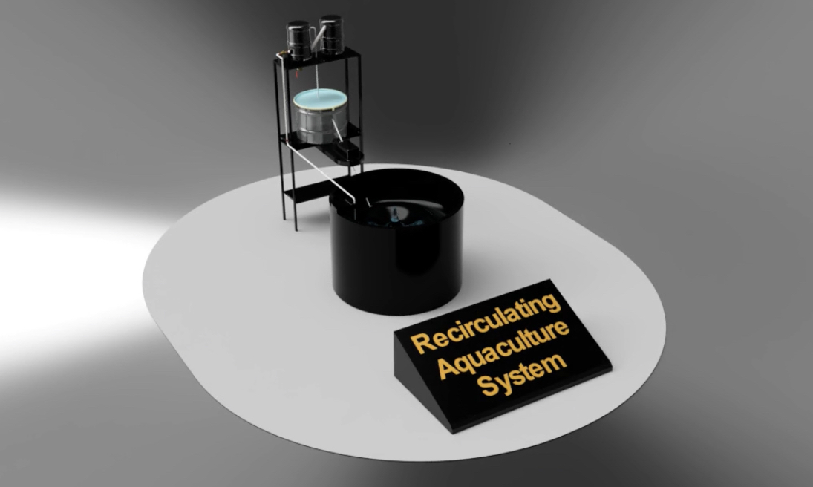
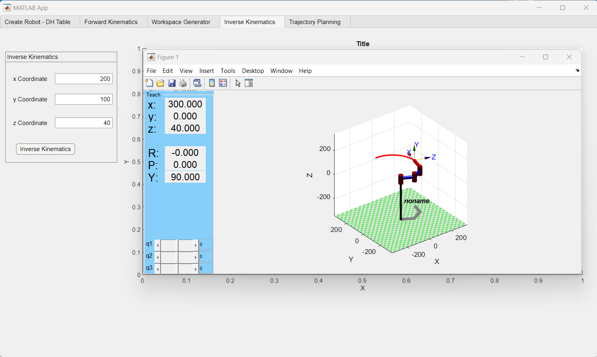

The 19-DOF Humanoid Robot was created as a functional tool for human tool interaction and environments, while also serving as an experimental platform for the study of bipedal locomotion and other areas of robotics research. Manufactured entirely through 3D printing technology within the Product Innovation Lab, the robot was designed and developed by a team of three experts.

The 3-Stage Automatic Water Filtration System for Marine Aquaculture optimizes fish farming operations. With a 1000-liter capacity, it utilizes the 3D Experience Platform (CATIA, SIMULIA, ENOVIA) for engineering. The innovative mechanical filter (mesh Filter) improves efficiency by 60% and reduces operational costs by 20%. Rigorous testing ensures adherence to industry standards for enhanced water quality and sustainability.

The GUI for modeling and control of an n-DOF robot, developed using Matlab's app building platform, empowers researchers with features like Forward and Inverse Kinematics, Workspace Study, and Trajectory planning. Managed by a skilled team of 5, it showcases a 12.75% improvement in trajectory planning through two modifications.

The Kharcha app is an intuitive and user-friendly expense tracking tool for shared expenses management within a group. With a clean interface, users easily input participant names and create a tabular layout for item names, costs, and multiples. The dynamic table allows effortless addition of items, specifying costs, and assigning contributors. Indicating the number of times an item is purchased streamlines recurring expenses. Accurate calculations upon data submission present a comprehensive expense summary, indicating the amount owed by each participant. The Kharcha app ensures seamless functionality and transparent, equitable expense distribution, proving indispensable for shared expenses management within groups.

The "Seat Attachment" project offers a compelling solution with impressive technical specs: Compatibility with Quickie Q300-700 and Permobil M5 wheelchairs (40% market), 95% Audio Reminder Accuracy, high-resolution 256x256 Pressure Sensing Precision, ±1% Timer Functionality deviation, and 1-degree Tilt Detection Sensitivity.

The Mimicking Hand project features a 15-DOF robotic hand, resembling adult human hand dimensions (15cm length, 3cm width). High-torque servo motors (20 kg/cm) enable realistic finger movements. 3D printed with PLA filament (0.2mm resolution) and reinforced with wooden frames for durability, it achieves a 90-degree flexion and 180-degree extension angle. Controlled by a microcontroller, it exhibits a high level of dexterity for potential applications in animatronics, prosthetics, and interactive entertainment industries.